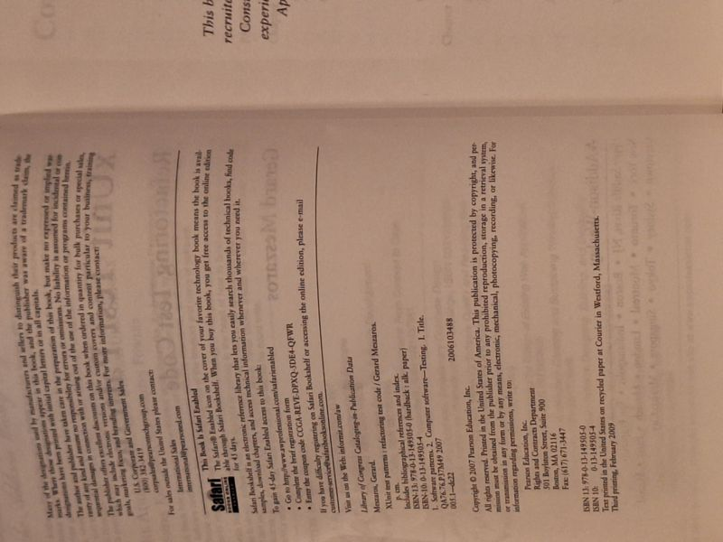

xUnit Test Patterns: Refactoring Test Code
Gerard Meszaros · Addison-Wesley / Pearson Education, 2007

C$65 · Fine condition
Gerard Meszaros, xUnit Test Patterns: Refactoring Test Code (Addison-Wesley, 2007), in the Martin Fowler Signature Series. Hardcover, third printing (February 2009), in Fine condition - boards clean and square, text block tight and unmarked. The definitive catalogue of automated unit-testing patterns, test smells, and the refactorings that address them; a standard reference for test-driven development and maintainable test suites. Foreword by Martin Fowler. Includes bibliographical references and index.
Details
- Publisher: Addison-Wesley / Pearson Education, 2007
- Binding: Hardcover
- Edition: First Edition, Third Printing (Feb 2009)
- Condition: Fine
- ISBN: 978-0-13-149505-0
- Category: Software